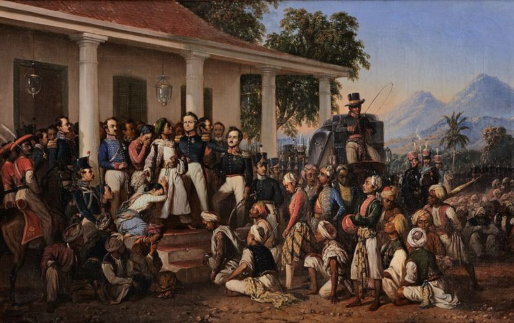

Latar Belakang Peristiwa Penangkapan Pangeran Diponegoro

Perang Jawa (1825-1830)
Pangeran Diponegoro memimpin Perang Jawa, sebuah perlawanan terbesar dan terlama melawan pemerintah kolonial Belanda. Konflik ini dipicu oleh ketidakpuasan atas kebijakan Belanda yang merampas tanah-tanah rakyat serta mengabaikan adat istiadat Jawa.
Penangkapan di Magelang
Pada tahun 1830, Belanda mengundang Pangeran Diponegoro untuk berunding di Magelang. Namun, ketika ia hadir, pihak Belanda menangkapnya dengan dalih perundingan. Ini dianggap sebagai tindakan pengkhianatan oleh banyak orang, termasuk Raden Saleh.
Motivasi Raden Saleh
Sebagai seniman yang sangat menghargai perjuangan Pangeran Diponegoro, Raden Saleh melihat peristiwa ini sebagai pengkhianatan yang mencerminkan kekejaman kolonialisme. Lukisan ini dibuat sebagai bentuk penghormatan terhadap keberanian Diponegoro.